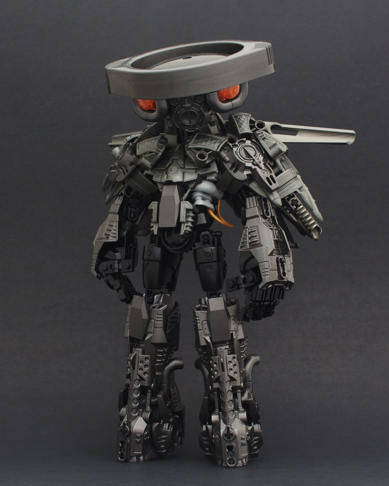
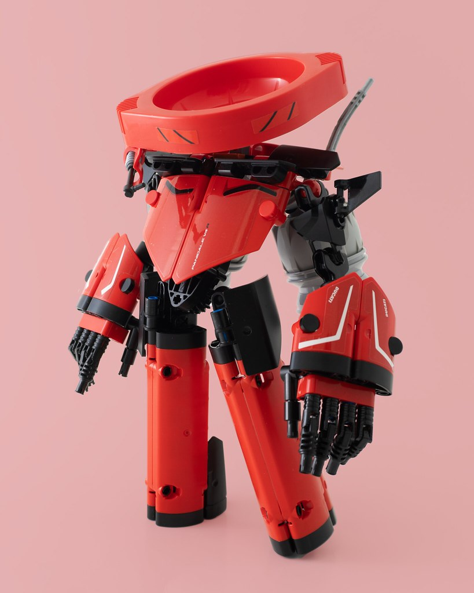
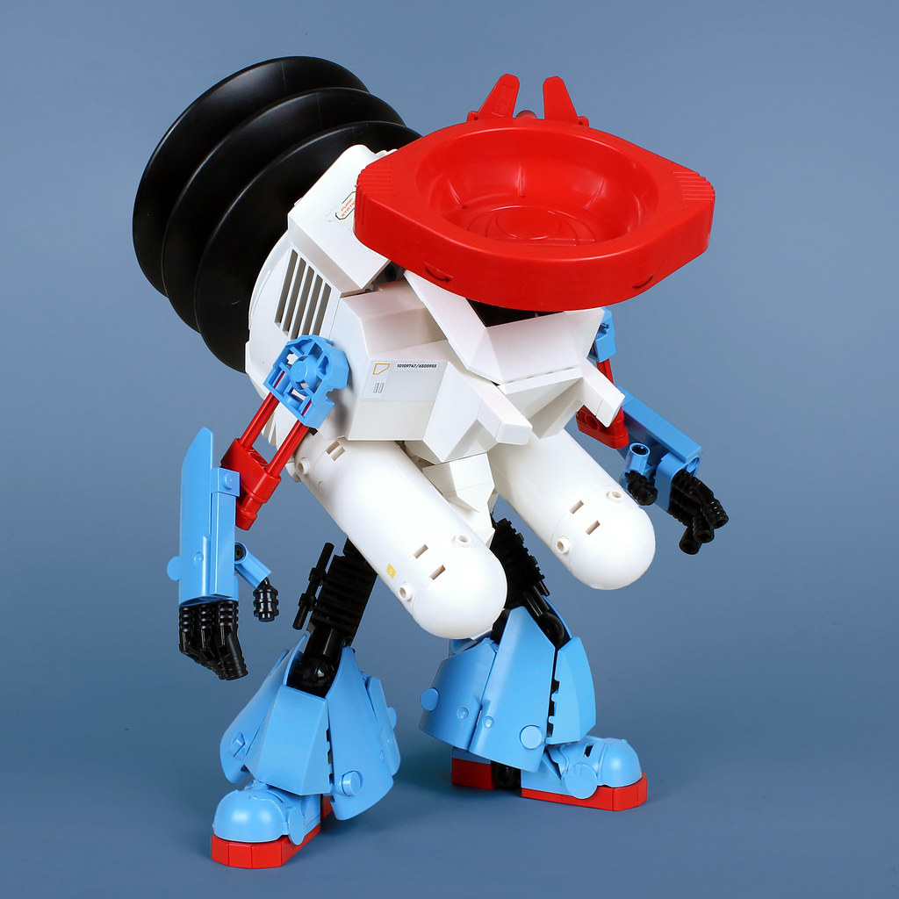
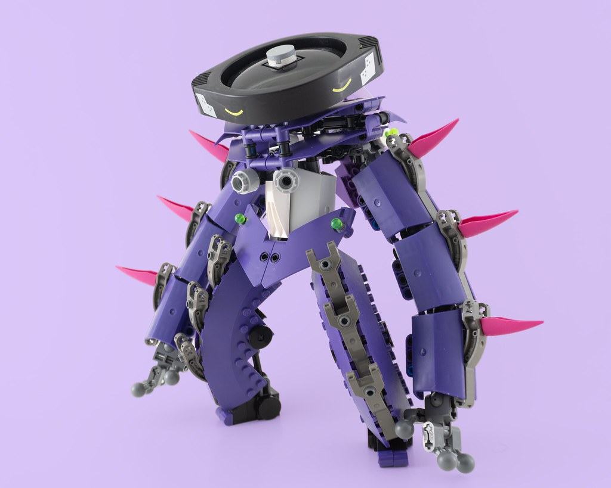
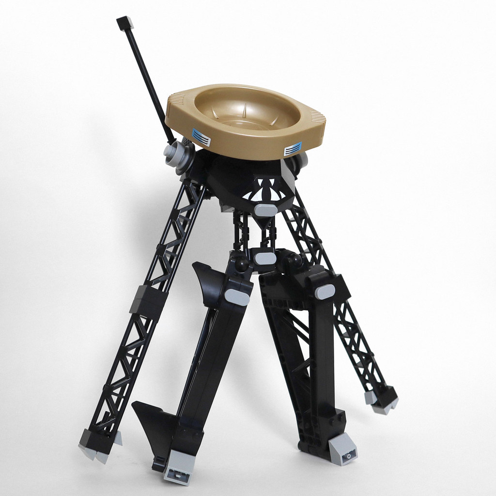
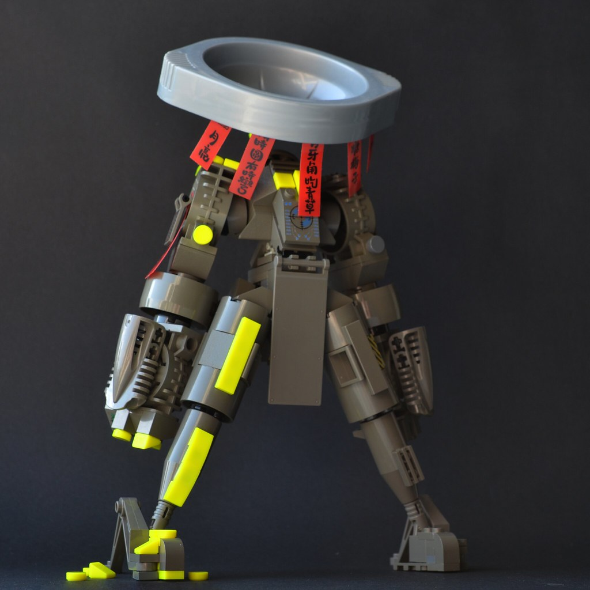
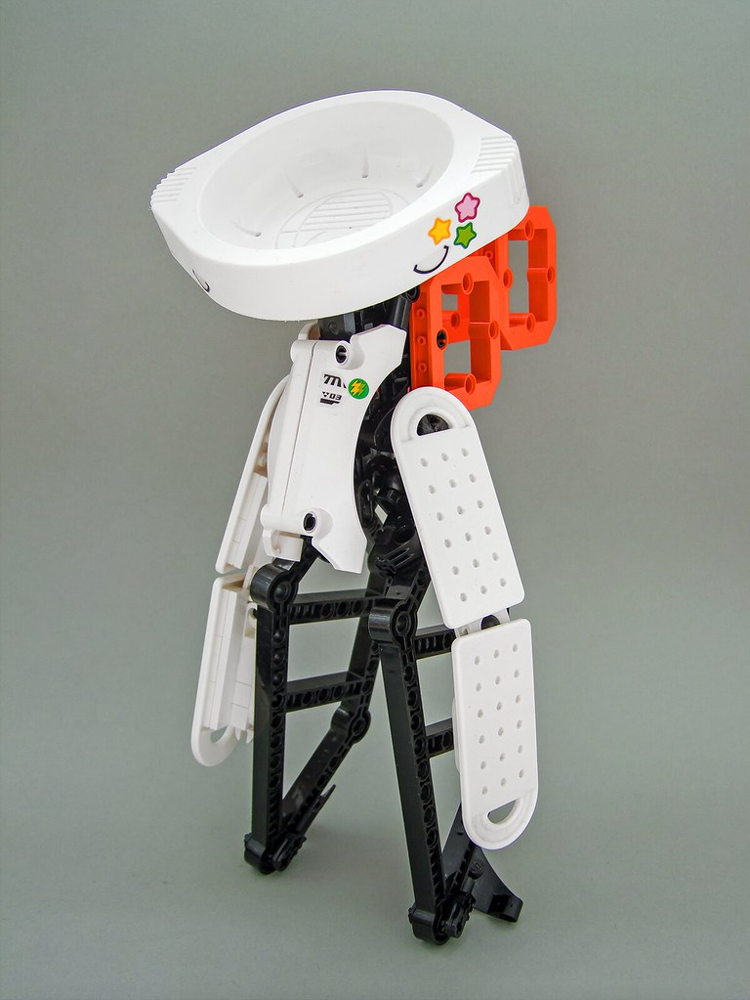

TYPE ASHI
TYPE ASHI is a collab where I enlisted a few of my friends to build their own version of my Ashi character. The only real constraints were that it use a bohrok lid as a head and its name end in "i". Otherwise, it was fair game! If you would like to make one as well, go ahead! Tag me in it or message me in some way (such as the flickr gallery comments) and I will add you to the gallery!
Bountii (Toni)

Digging the darker, grittier take on display here! Lots of fun details like the greebles on the face panel having a nose and mouth implied, and the light grey parts in the ribs looking like an exposed part of an engine. I like the chunky blast furnace legs and how the technic panels and inika chestpieces frame the shoulders.
Igni

This one is mine! It's a squatter, streamlined type with race inspired lines and aerodynamics. There's two rocket engines on the back and he has a little headset for comms. His little squinty eyes are better for seeing at high speeds.
mjymi (Sadie)

Super crazy maximalist! Really cool polygonal lines in the chest, the vents on the pump matching with the fuel tanks lining the side, big stompers with an inspired noble mahiki usage... Not to mention a bonkers toothpaste color scheme that I would never have come up with myself. So much cool part usage on display here. I especially like the little ears as an addition to the bohrok lid and the way the grills on the thighs match with the fingers. The ratchet joints for the knees also look super good here too. There's probably even more details that I'm forgetting to mention.
Baati

This one is also mine! A big, stocky bear-type Ashi. I had fun mixing in the old grey Bionicle parts juxtaposed against the new purple and white parts. I was inspired to try a more peculiar color scheme after seeing Sadie's myjmi and Ben's Silaci!
Kitiguri (Max)

Super clean execution of a smart idea. Lots of great details to be seen here, like the minifig hands using to continue the girder pattern in the chest, a vidiyo bracelet tying the neat light grey shoulder joints together, and cheese slope hands that look super stylized despite how simple they are. The technic panel leg wings, chest pattern, and antenna really tie everything together. Super cool eye sticker too!
Silaci

Another genius color combo using neon yellow and old grey. The giant flag on the front is perfect and the shaping in all the old grey is really good. Really nice fitting in the technic visors in the armpit area to transition from the torso to the big, bulky shoulder pauldrons. The flags are a nice touch as well. Really dig the asymetric neon yellow details too. What a cool stance...
amai (Djok)

Sooo clean. Probably the best sticker usage in the collab and really awesome shapes using the RC car liftarms(?) and Dots tags. The new orange adds such a good pop to the white and black as well. I wish I thought of using the mudguards lik that, it's such a cool shape. I'm also super grateful to have it on my shelf after meeting up with Djok this summer! It has a treasured spot on my shelf.